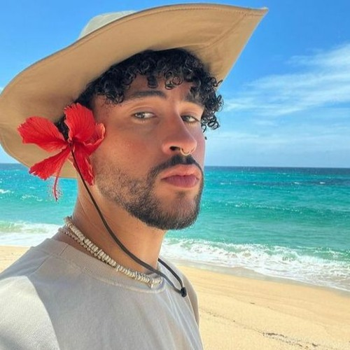

Historia
Wiki de BenitoEn un pequeño pueblo de Puerto Rico llamado Vega Baja, nació un niño llamado Benito Antonio Martínez Ocasio.
Desde pequeño, su mundo estaba lleno de música: su madre lo llevaba a la iglesia, donde cantaba en el coro, y en casa escuchaba salsa,
merengue y reguetón. Benito no era el típico chico que soñaba con ser doctor o ingeniero. Su pasión era la música y la creatividad
En la escuela, mientras otros pensaban en deportes, él escribía canciones y soñaba con escenarios.
Su apodo, “Bad Bunny”, nació de una foto de la infancia en la que aparece disfrazado de conejo con cara de pocos amigos
Al crecer, trabajó como empacador en un supermercado, pero nunca dejó de producir música en su computadora y subirla a SoundCloud.
Un día, su tema “Diles” llamó la atención de productores y artistas, y así comenzó la aventura.
De repente, aquel chico de Vega Baja estaba colaborando con grandes nombres del reguetón y el trap. Su estilo era diferente:
atrevido, experimental, auténtico. No solo cantaba, también rompía estereotipos con su forma de vestir y su mensaje.
Con el tiempo, llegaron los álbumes que marcaron historia:
• X 100PRE (2018), su debut que lo puso en el mapa mundial. • YHLQMDLG (2020), un homenaje al reguetón clásico con un título que significa “Yo Hago Lo Que Me Da La Gana”.
• Un Verano Sin Ti (2022), que se convirtió en un fenómeno global y el primer álbum en español en ganar el Grammy a Álbum del Año.
Hoy, Bad Bunny no es solo un cantante: es un ícono cultural, un artista que representa a Puerto Rico y
a toda una generación que busca ser libre, auténtica y sin miedo a romper moldes.

Informacion
Habilidades y logros
- Ganador de múltiples premios Grammy y Latin Grammy
- Innovador en la música urbana y trap latino
- Actor en la serie "Narcos: México"
- Primer artista latino en ser portada de Rolling Stone
- Reconocido por su activismo social y cultural
Top 3 momentos icónicos
- Presentación en el Super Bowl LIV junto a Shakira y J.Lo
- Lanzamiento del álbum "YHLQMDLG" en 2020
- Su gira "World´s Hottest Tour" con estadios llenos en todo el mundo
Ficha Tecnica
| Edad | Peso | Estatura | Inicio de carrera | Curiosidades | Nombre completo |
|---|---|---|---|---|---|
| 31 años | 75 kg | 1.80 m | 2016 | Fue empacador en un supermercado antes de ser famoso | Benito Antonio Martínez Ocasio |